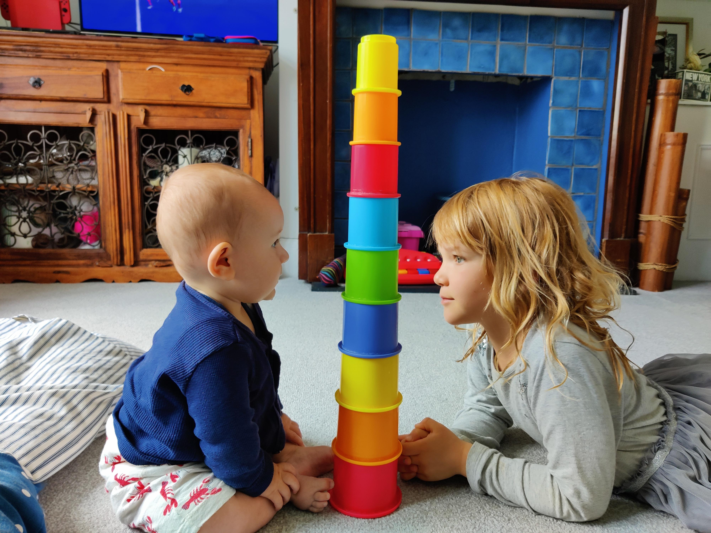
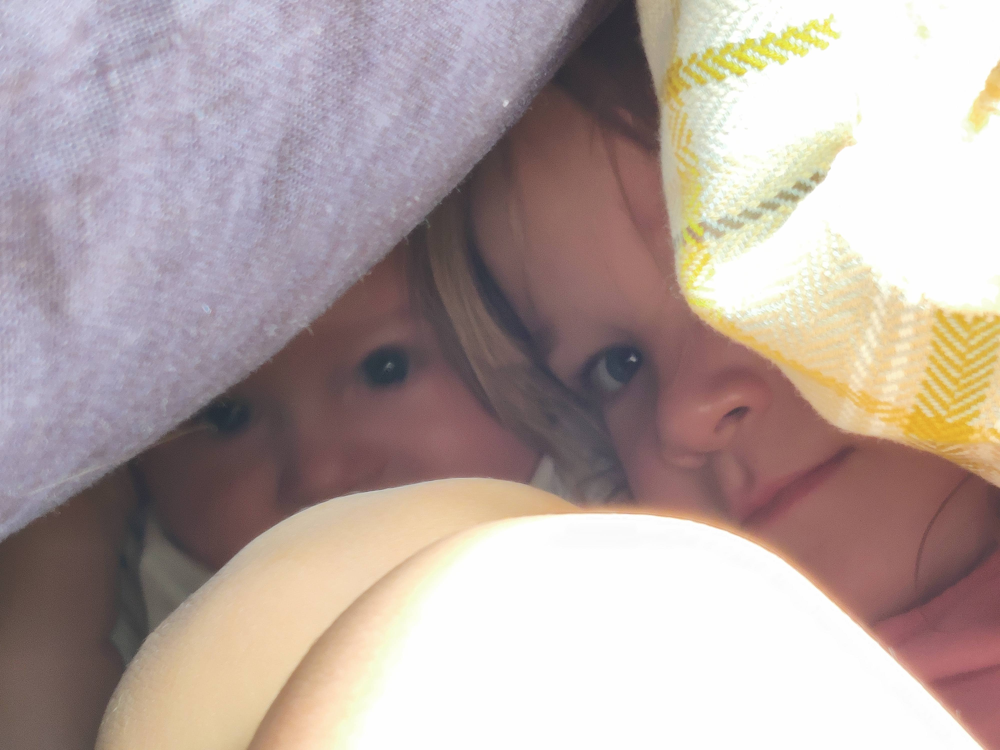
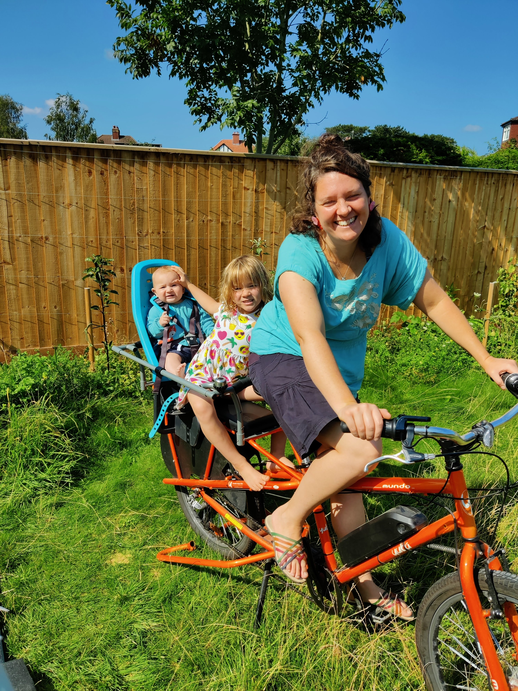
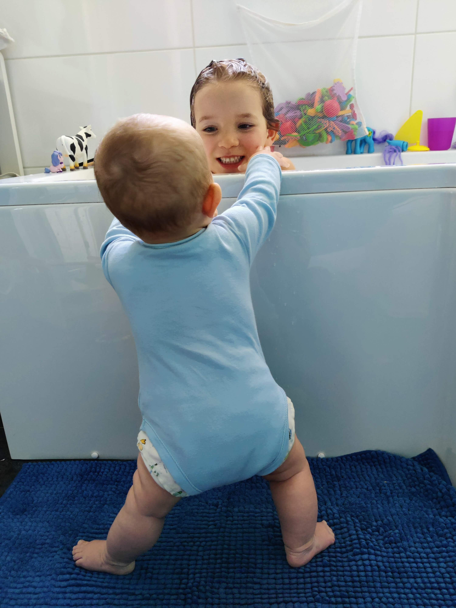

Kirsten was 5 when Joel was born. We hoped that the age gap between the two would mean Kirsten would understand more about what was going on when Joel was born, and could respond to the impact on the family dynamics more rationally. Now we are almost 9 months in, I think it is safe to say that she has responded really well. There have been some difficult times, which we expected. She has been an only child with the full time attention of at least 1 parent for 5 years, so it’s hard for her to understand why we can’t simply put Joel down so we can play Sylvanian Families with her. Those occasions are definitely in the minority.
She is a very proud older sister. She really enjoys showing Joel to friends and describing his latest trick. She’s often very complimentary about him (yesterday she woke up calling him “gorgeous”). She’s very good at playing within him and keeping him entertained.
   
It can’t be easy for her. She has a lot going on in her life. She will no doubt have been impacted by the pandemic in ways we don’t know. She’s just starting Year 1 at school, where she will have new pressures of paying attention, sharing, learning and all sort of other school dynamics. So to have a little brother come along and occupy a large space in the family home can only add to the challenges. Having said that, she is a resilient person and always looking for where the next laugh is coming from.
My hope, which is probably the same for most parents, is that their relationship keeps growing and that they can remain friends as they grow older.